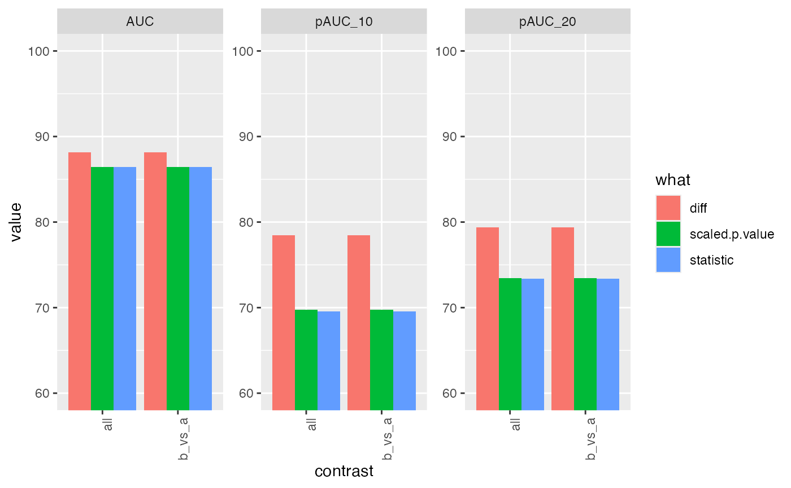

DEA benchmark CPTAC/MaxQuant/peptide.txt
Witold E. Wolski
2022-10-30
Source:../vignettes/Benchmark_cptac.Rmd
Benchmark_cptac.RmdIntroduction
The r-package msdata msdata provides a subset of the data of the 6th study of the Clinical Proteomic Technology Assessment for Cancer (CPTAC). In this experiment, the Sigma Universal Protein Standard mixture 1 (UPS1) containing \(48\) different human proteins was spiked in a protein background of 60 ng/\(\mu L\) Saccharomyces cerevisiae strain BY4741. Two different spike-in concentrations were used, 6A (\(0.25\) fmol UPS1 proteins/\(\mu L\)) and 6B (\(0.74\) fmol UPS1 proteins/\(\mu L\)). Three replicates are available for each concentration.
library(tidyverse)
tmp <- msdata::quant(full.names = TRUE)
xx <- read.csv(tmp, sep = "\t")
peptides <- prolfqua::tidyMQ_Peptides(xx)
annotation <- data.frame(raw.file = unique(peptides$raw.file))
annotation <- annotation |> dplyr::mutate(group = gsub("^6","",raw.file)) |> mutate(group = gsub("_[0-9]$", "", group))
peptides <- dplyr::inner_join(annotation, peptides)
config <- prolfqua::create_config_MQ_peptide()
config$table$factors["group."] = "group"
peptides <- prolfqua::setup_analysis(peptides, config)
lfqpeptides <- prolfqua::LFQData$new(peptides, config)
lfqpeptides$filter_proteins_by_peptide_count()
lfqpeptides$remove_small_intensities()
lfqpeptides$hierarchy_counts()## # A tibble: 1 × 3
## isotope protein_Id peptide_Id
## <chr> <int> <int>
## 1 light 1341 7787
lfqpeptides$factors()## # A tibble: 6 × 3
## raw.file sampleName group.
## <chr> <chr> <chr>
## 1 6a_7 a a
## 2 6a_8 a~1 a
## 3 6a_9 a~2 a
## 4 6b_7 b b
## 5 6b_8 b~1 b
## 6 6b_9 b~2 bTransform and Aggregate
First we transform the data using vsn::justvsn function and afterwards we estimate protein intensities using Tukeys median polish.
tr <- lfqpeptides$get_Transformer()
tr <- tr$intensity_matrix(vsn::justvsn)
lfqtransformed <- tr$lfq
agg <- lfqtransformed$get_Aggregator()
agg$medpolish()
pl <- agg$plot()
gridExtra::grid.arrange(grobs = pl$plots[33:38])Peptide abundances and protein abundance estimates.
lfqProt <- agg$lfq_aggFit model with prolfqua
library(prolfqua)
model <- paste(lfqProt$response(), " ~ group. ")
lm <- prolfqua::strategy_lm(model)
lmmodl <- prolfqua::build_model(lfqProt, lm)
contrast <- c("b_vs_a" = "group.b - group.a")
clm <- prolfqua::Contrasts$new(lmmodl, contrast)
tt <- clm$get_contrasts()
csimp <- prolfqua::ContrastsSimpleImpute$new(lfqProt, contrast)
tt <- csimp$get_contrasts()
merge <- prolfqua::merge_contrasts_results(clm, csimp)
cmod <- ContrastsModerated$new(merge$merge)
pl <- cmod$get_Plotter()
pl$volcano()$FDRSetting up benchmark. UPS proteins are true positives, while YEAST proteins are true negatives. Contaminants are removed. This leaves 1460 proteins.
ttd <- prolfquabenchmark::cptac_bench_preprocess(cmod$get_contrasts(), idcol = "protein_Id")
benchmark_merged <- prolfqua::make_benchmark(
ttd$data,
model_description = "merge of prot moderated and imputed",
model_name = "prolfqua_merged")
sumarry <- benchmark_merged$smc$summary
knitr::kable(sumarry, caption = "nr of proteins with 0, 1, 2, 3 missing contrasts.",format = "html")| nr_missing | protein_Id |
|---|---|
| 0 | 1333 |
res <- benchmark_merged$pAUC_summaries()
knitr::kable(res$ftable$content,caption = res$ftable$caption)| contrast | what | AUC | pAUC_10 | pAUC_20 |
|---|---|---|---|---|
| all | diff | 87.96912 | 77.22948 | 78.79635 |
| all | scaled.p.value | 86.19648 | 68.54565 | 72.68935 |
| all | statistic | 86.10209 | 67.50736 | 72.21740 |
| b_vs_a | diff | 87.96912 | 77.22948 | 78.79635 |
| b_vs_a | scaled.p.value | 86.19648 | 68.54565 | 72.68935 |
| b_vs_a | statistic | 86.10209 | 67.50736 | 72.21740 |
res$barp
Fit model with proDA
library(prolfqua)
library(proDA)
library(SummarizedExperiment)
se <- prolfqua::LFQDataToSummarizedExperiment(lfqProt)
mm <- model.matrix(~ group., colData(se))
proModel <- proDA::proDA(se, design = mm, data_is_log_transformed = TRUE)
res <- test_diff(proModel, "group.b", sort_by = "pval")
res$contrast = "b_vs_a"
tmp <- prolfqua::ContrastsProDA$new(res, c("a_vs_b" = "group.b - group.a"))
tmp$get_Plotter()$volcano()$adj_pval
ttd <- prolfquabenchmark::cptac_bench_preprocess(tmp$get_contrasts(), idcol = "name")
benchmark_proDA <- prolfqua::make_benchmark(ttd$data,
contrast = "contrast",
toscale = c("pval"),
fcestimate = "diff",
benchmark = list(
list(score = "diff", desc = TRUE),
list(score = "t_statistic", desc = TRUE),
list(score = "scaled.pval", desc = TRUE)
),
model_description = "proDA_medpolishInt",
model_name = "proDA_medpolishInt",
FDRvsFDP = list(list(score = "adj_pval", desc = FALSE))
, hierarchy = c("name"), summarizeNA = "t_statistic"
)
sumarry <- benchmark_proDA$smc$summary
prolfqua::table_facade(sumarry, caption = "nr of proteins with 0, 1, 2, 3 missing contrasts.")| nr_missing | name |
|---|---|
| 0 | 1333 |
res <- benchmark_proDA$pAUC_summaries()
knitr::kable(res$ftable$content,caption = res$ftable$caption)| contrast | what | AUC | pAUC_10 | pAUC_20 |
|---|---|---|---|---|
| all | diff | 89.88333 | 79.41932 | 84.76176 |
| all | scaled.pval | 88.76765 | 69.71608 | 76.05905 |
| all | t_statistic | 88.76765 | 69.71608 | 76.05905 |
| b_vs_a | diff | 89.88333 | 79.41932 | 84.76176 |
| b_vs_a | scaled.pval | 88.76765 | 69.71608 | 76.05905 |
| b_vs_a | t_statistic | 88.76765 | 69.71608 | 76.05905 |
res$barpFit model with msqrob
se <- prolfqua::LFQDataToSummarizedExperiment(lfqtransformed)
pe <- QFeatures::QFeatures(list(peptide = se), colData = colData(se))
my_medianPolish <- function(x, verbose = FALSE, ...){
medpol <- stats::medpolish(x, na.rm = TRUE, trace.iter = verbose, maxiter = 10)
return(medpol$overall + medpol$col)
}
pe <- QFeatures::aggregateFeatures(
pe,
i = "peptide", fcol = "protein_Id",
name = "protein", fun = my_medianPolish,
)
library(msqrob2)
prlm <- msqrobHurdle(pe,
i = "protein",
formula = ~group.,
overwrite = TRUE)
L <- makeContrast(c("group.b=0"),
parameterNames = c("group.b"))
prlm <- hypothesisTestHurdle(prlm, i = "protein", L, overwrite = TRUE)
xx <- rowData(prlm[["protein"]])
hurdle <- xx[grepl("hurdle_",names(xx))]
res <- list()
for (i in names(hurdle)) {
hurdle[[i]]$contrast <- i
res[[i]] <- prolfqua::matrix_to_tibble(hurdle[[i]], preserve_row_names = "name")
}
hurdle <- dplyr::bind_rows(res)
logFC <- hurdle |> dplyr::select("name","contrast", starts_with("logFC"))
logFC <- filter(logFC ,!is.na(logFCt))
logFC$modelName <- "msqrobHurdleIntensity"
names(logFC) <- c("name","contrast","logFC","se","df","t","pval","modelName")
logOR <- hurdle |> dplyr::select("name","contrast", starts_with("logOR"))
logOR$modelName <- "msqrobHurdleCount"
names(logOR) <- c("name","contrast","logFC","se","df","t","pval","modelName")
ddd <- dplyr::anti_join(logOR , logFC, by = c("name", "contrast"))
all <- dplyr::bind_rows(ddd , logFC) |> dplyr::arrange(contrast, name)
all <- prolfqua::adjust_p_values(all, column = "pval", group_by_col = "contrast")
all$contrast <- "b_vs_a"
st <- lfqProt$get_Stats()
protAbundanceIngroup <- st$stats()
protAbundanceIngroup <- protAbundanceIngroup |>
tidyr::pivot_wider(id_cols = protein_Id,
names_from = group., names_prefix = "abd.",
values_from = mean)
protAbundanceIngroup <- protAbundanceIngroup |> dplyr::mutate( avgAbd.b.a = mean( c(abd.b,abd.a), na.rm = TRUE) )
protAbundanceIngroup <- protAbundanceIngroup |>
dplyr::select(-starts_with("abd")) |>
tidyr::pivot_longer(starts_with("avgAbd"), names_to = "contrast" ,values_to = "avgAbd")
protAbundanceIngroup$contrast <- "b_vs_a"
bb <- dplyr::inner_join(all, protAbundanceIngroup, by = c("name" = "protein_Id", "contrast" = "contrast"))
ttd <- prolfquabenchmark::cptac_bench_preprocess(bb, idcol = "name")
benchmark_msqrob <- prolfqua::make_benchmark(ttd$data,
contrast = "contrast",
toscale = c("pval"),
fcestimate = "logFC",
benchmark = list(
list(score = "logFC", desc = TRUE),
list(score = "t", desc = TRUE),
list(score = "scaled.pval", desc = TRUE)
),
model_description = "msqrob2_QFeature",
model_name = "msqrob2_QFeature",
FDRvsFDP = list(list(score = "pval.adjusted", desc = FALSE))
, hierarchy = c("name"), summarizeNA = "t"
)
sum(benchmark_msqrob$smc$summary$name)## [1] 1333
sumarry <- benchmark_msqrob$smc$summary
prolfqua::table_facade(sumarry, caption = "nr of proteins with 0, 1, 2, 3 missing contrasts.")| nr_missing | name |
|---|---|
| 0 | 1333 |
res <- benchmark_msqrob$pAUC_summaries()
knitr::kable(res$ftable$content,caption = res$ftable$caption)| contrast | what | AUC | pAUC_10 | pAUC_20 |
|---|---|---|---|---|
| all | logFC | 91.21045 | 72.41562 | 82.47754 |
| all | scaled.pval | 89.14710 | 68.86657 | 75.71925 |
| all | t | 88.81673 | 66.07264 | 74.19014 |
| b_vs_a | logFC | 91.21045 | 72.41562 | 82.47754 |
| b_vs_a | scaled.pval | 89.14710 | 68.86657 | 75.71925 |
| b_vs_a | t | 88.81673 | 66.07264 | 74.19014 |
res$barp
Compare benchmark results.
saveRDS(list(benchmark_msqrob = benchmark_msqrob,
benchmark_proDA = benchmark_proDA,
benchmark_merged = benchmark_merged),
file = "../inst/Benchresults/CPTAC_Benchmark.RDS")
mrob <- benchmark_msqrob$pAUC_summaries()$ftable$content
mrob$package <- "msqrob2"
proda <- benchmark_proDA$pAUC_summaries()$ftable$content
proda$package <- "proDA"
prolfqua <- benchmark_merged$pAUC_summaries()$ftable$content
prolfqua$package <- "prolfqua"
all <- dplyr::bind_rows(list(mrob, proda, prolfqua))
all <- all |> filter(contrast == "b_vs_a")
all$what[all$what == "statistic"] <- "t_statistic"
all$what[all$what == "t"] <- "t_statistic"
all$what[all$what == "scaled.pval"] <- "scaled.p.value"
all$what[all$what == "logFC"] <- "diff"
all |> ggplot(aes(x = what, y = pAUC_10, group = package, color = NULL, fill = package)) +
geom_bar(stat = "identity", position = position_dodge()) Comparing msqrob2, proda and prolfqua using the pAUC_{10}
ttmsqrob <- benchmark_msqrob$data()
ddmsqrob <- pROC::roc(ttmsqrob$TP, ttmsqrob$scaled.pval, partial.auc = c(1, 0.9))
ttprolfqua <- benchmark_merged$data()
ddprolfqua <- pROC::roc(ttprolfqua$TP, ttprolfqua$scaled.p.value, partial.auc = c(1, 0.9))
ttproda <- benchmark_proDA$data()
ddproda <- pROC::roc(ttproda$TP, ttproda$scaled.pval, partial.auc = c(1, 0.9))
tmp <- c(msqrob2_vs_prolfqua = pROC::roc.test(ddmsqrob,ddprolfqua, progress = "none")$p.value,
msqrob2_vs_proda = pROC::roc.test(ddmsqrob,ddproda, progress = "none")$p.value,
prolfqua_vs_proda = pROC::roc.test(ddprolfqua,ddproda, progress = "none")$p.value)We observe that for this benchmark data, there are no significant differences among the \(AUC_{10}\) for the three packages. The Table @ref(tab:shwoROCtestREsults) shows the results of the Bootstrap test for two ROC curves.
knitr::kable(data.frame(pROC_test = names(tmp), p.value = tmp), caption = "p-values for pairwise comparsions of partial AUC")| pROC_test | p.value | |
|---|---|---|
| msqrob2_vs_prolfqua | msqrob2_vs_prolfqua | 0.9794498 |
| msqrob2_vs_proda | msqrob2_vs_proda | 0.9203194 |
| prolfqua_vs_proda | prolfqua_vs_proda | 0.9026306 |